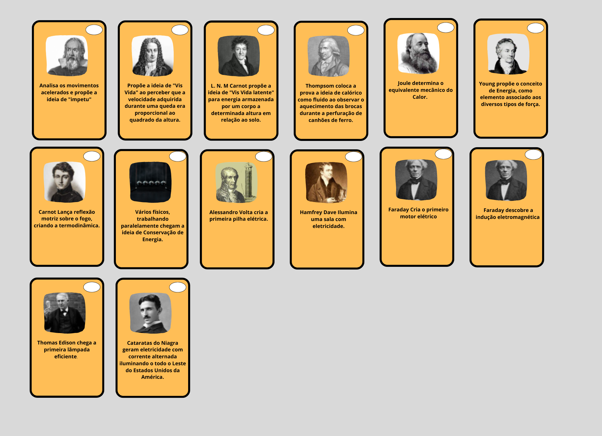
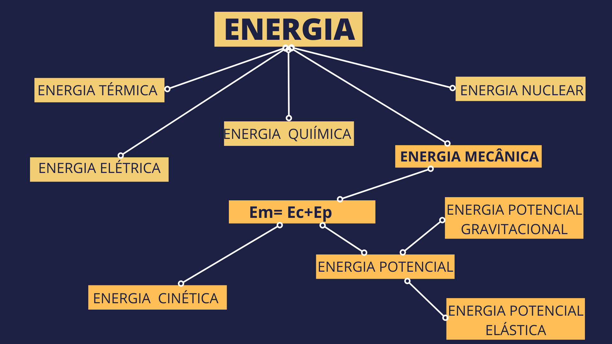

SEQUÊNCIA DIDÁTICA: ENERGIA
COMPETÊNCIAS
Analisar fenômenos naturais e processos tecnológicos, com base nas interações e relações entre matéria e energia, para propor ações individuais e coletivas que aperfeiçoem processos produtivos, minimizem impactos socioambientais e melhorem as condições de vida em âmbito local, regional e global.
HABILIDADES
(EM13CNT101) Analisar e representar, com ou sem o uso de dispositivos e de aplicativos digitais específicos, as transformações e conservações em sistemas que envolvam quantidade de matéria, de energia e de movimento para realizar previsões sobre seus comportamentos em situações cotidianas e em processos produtivos que priorizem o desenvolvimento sustentável, o uso consciente dos recursos naturais e a preservação da vida em todas as suas formas.
OBJETIVOS GERAIS
OBJETIVOS ESPECIFICOS
MOMENTOS DA EXPERIÊNCIA DE APRENDIZAGEM
Momento 1 (12 min)
Iniciaremos com o vídeo: Energia do canal do youtube Nerdologia, esse vídeo aborda a importância da capacidade humana de manipular energia para a construção da sociedade moderna. Em seguida media-se uma reflexão de como nossa vida seria diferente se não tivéssemos a capacidade de manipular energia. Através dessa etapa pretende-se atentar o estudante para a relevância do tema energia para sua vida, e assim tornar o objeto de conhecimento significativo para ele.
Momento 2 (10 min)
Em equipe, será solicitado que os estudantes montem um quebra cabeça com os principais eventos históricos que nos permitiram construir o conceito de energia e consequentemente ser capaz de manipulá-la, de início os eventos estarão sem data pré-estabelecidas, eles usarão a intuição para ordenar da maneira que lhes pareça mais adequada. É esperado que eles o façam de forma linear com um evento após o outro. Posteriormente será solicitado que eles compartilhem entre as equipes a construção que fizeram e comparem os resultados. Finaliza-se datando os eventos, de forma que eles percebam que muitos eventos ocorreram de forma simultânea, nesse momento eles serão mediados a perceber que na verdade os eventos ocorreram de forma não linear e acabaram convergindo no conceito atual de energia.
Momento 3 ( 5 min)
Construção de um mapa de conceito coletivo, conceituando os diversos tipos de energia com foco em energia mecânica e suas manifestações.
Momento 4 (20 min)
Atividade experimental virtual com o Phet Colorado : Energia na pista de skate, nessa atividade eles irão realizar medições com os instrumentos da plataforma mediado via questões propositivas, visando compreender o conceito de conservação e transformação de energia